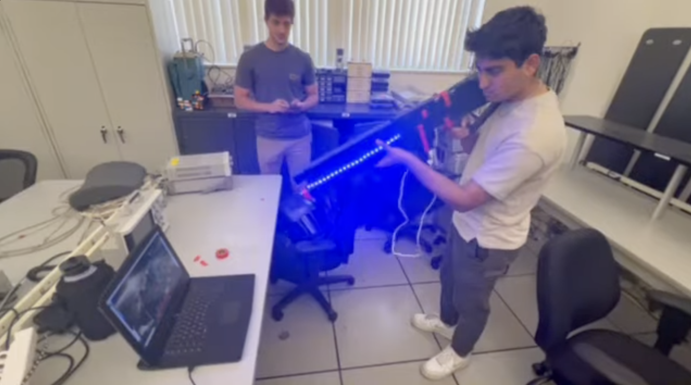
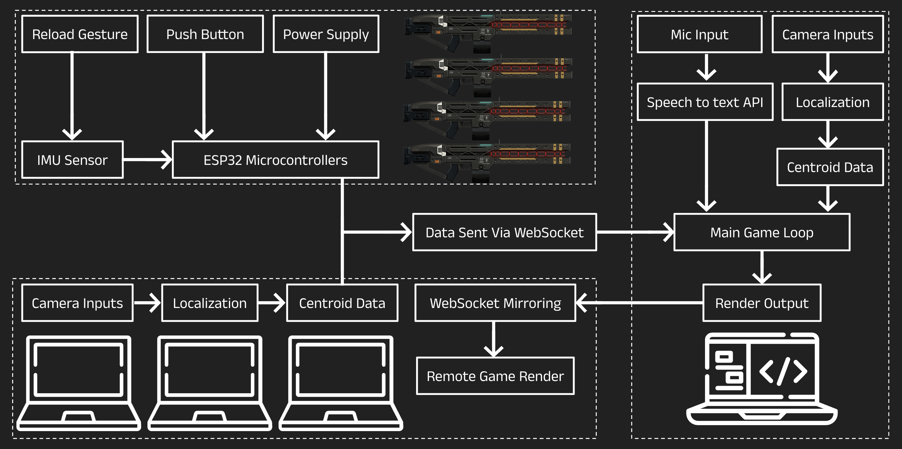
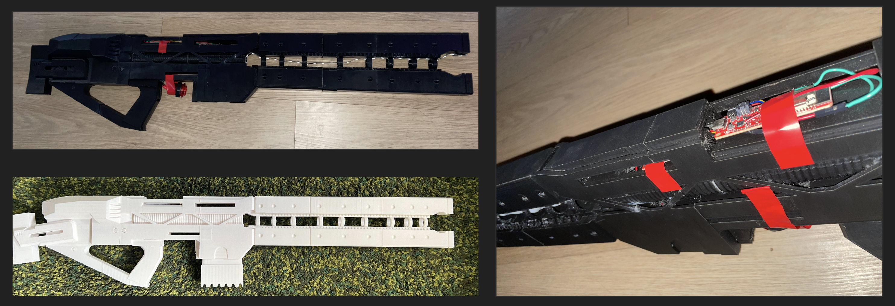

🎮 Railgun Rampage — Embedded System Multiplayer Game
Overview
Railgun Rampage was my embedded systems senior project at UCLA. My team of three built a multiplayer arcade-style shooter game where up to four players used custom railgun controllers to aim, shoot, reload, and interact with a Unity game environment.
The system combined multiple input methods: camera-based localization, speech recognition, gesture recognition, and real-time multiplayer communication. Each player connected through a script that communicated with a host over WebSockets for low-latency gameplay.
Full source code and implementation details are available in the GitHub repository linked above.

Project Requirements
- Support online multiplayer gameplay for up to four players.
- Use camera tracking to localize player aim.
- Use speech recognition for voice-based interaction.
- Use gesture recognition for actions like reloading.
- Communicate between players and the host with low latency.
- Display gameplay through an intuitive Unity GUI.
System Architecture
The project used one host script to handle the main processing and game state, while player scripts connected to the host through WebSockets. Camera inputs were processed with OpenCV thresholding, speech commands were handled through a Google Speech-to-Text API, and gesture actions were detected with an IMU sensor from SparkFun.

Hardware Controller
I worked on the railgun-style controller integration. The controller used embedded hardware to support player input, including aim tracking, gesture-based reloading, shooting inputs, lighting, and feedback effects.

Software & Input Processing
- Camera tracking: OpenCV in Python with thresholding to detect the player’s aiming position.
- Speech recognition: Google Speech-to-Text API with a headset and microphone.
- Gesture recognition: SparkFun IMU sensor used to classify reload gestures.
- Networking: WebSockets used for communication between player scripts and the host script.
- GUI: Unity used to render the game interface and gameplay environment.
Example Networking Flow
// Simplified WebSocket-style flow
Player Controller:
- Read camera aim position
- Read IMU gesture state
- Read speech command
- Package player input as JSON
- Send input packet to host
Host Script:
- Receive player input packets
- Update shared game state
- Resolve shooting, reloading, and collisions
- Broadcast updated state to connected players
Unity Client:
- Render current game state
- Display player actions, enemies, health, and effectsDemo Images


Repository
The original project source code is hosted on my UCLA GitHub account. The repository includes implementation work for the camera tracking, game logic, networking, and embedded controller portions of the project.
Open GitHub Repository →Technical Challenges
- Managing real-time input, rendering, networking, and feedback with low latency.
- Making the system robust across different lighting and sound conditions.
- Balancing performance and feature complexity.
- Integrating camera tracking, speech recognition, gesture recognition, and game logic into one working system.
- Designing a railgun chassis that was functional, ergonomic, and visually aligned with the game theme.
Results
- Created functional railgun controllers with multiplayer support.
- Implemented smooth shooting and reloading interactions.
- Achieved precise camera-based aim tracking.
- Integrated lighting, sound, and trigger effects for better immersion.
- Demonstrated the final product to peers.
What I Learned
This project taught me how to integrate hardware, software, communication protocols, and user interaction into a complete embedded system. It also reinforced the importance of iterative testing, system architecture, team coordination, and making tradeoffs between complexity, performance, and reliability.